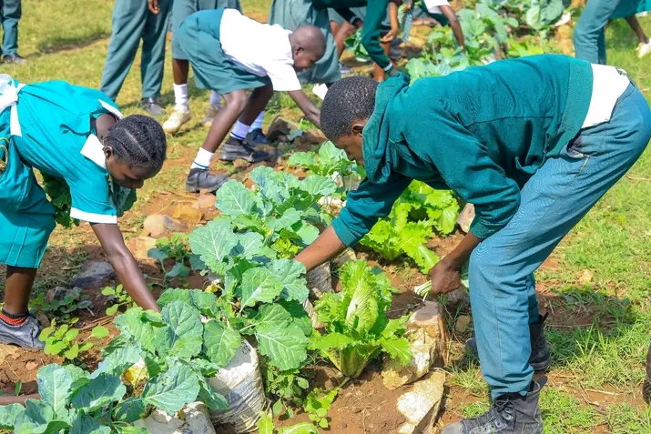

Flagship ProgramSchool Food & Nutrition Gardens
We partner directly with primary and secondary schools to install closed-loop wicking container garden systems. These beds serve as outdoor living laboratories where learners practice climate-smart biology while cultivating fresh spinach, kale, and indigenous vegetables for daily school lunch supplementation.